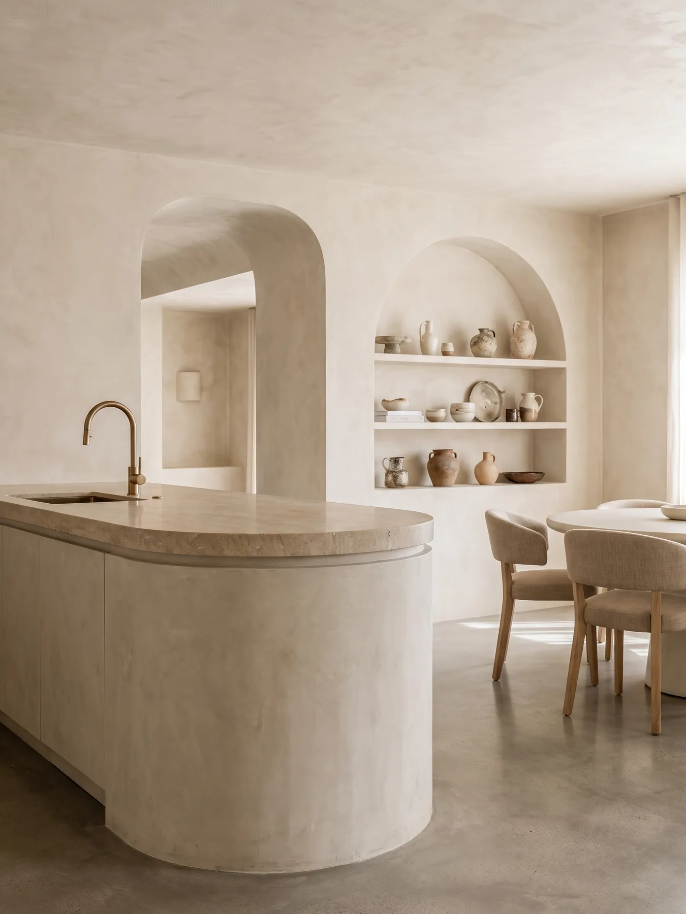
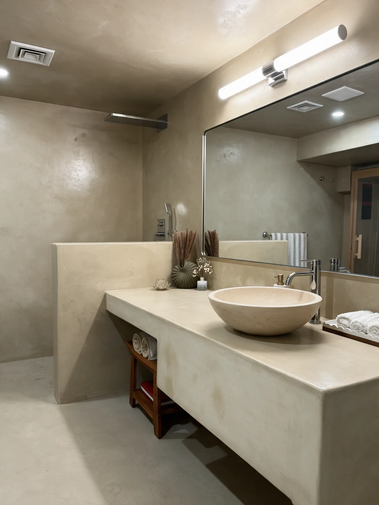
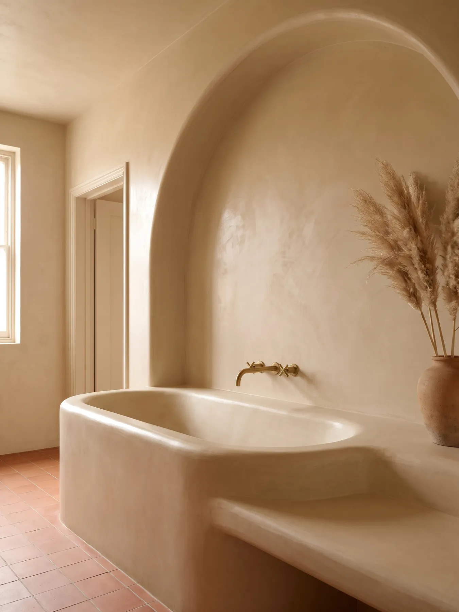
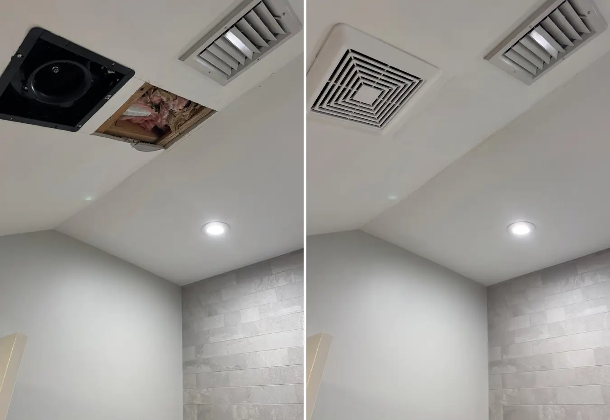
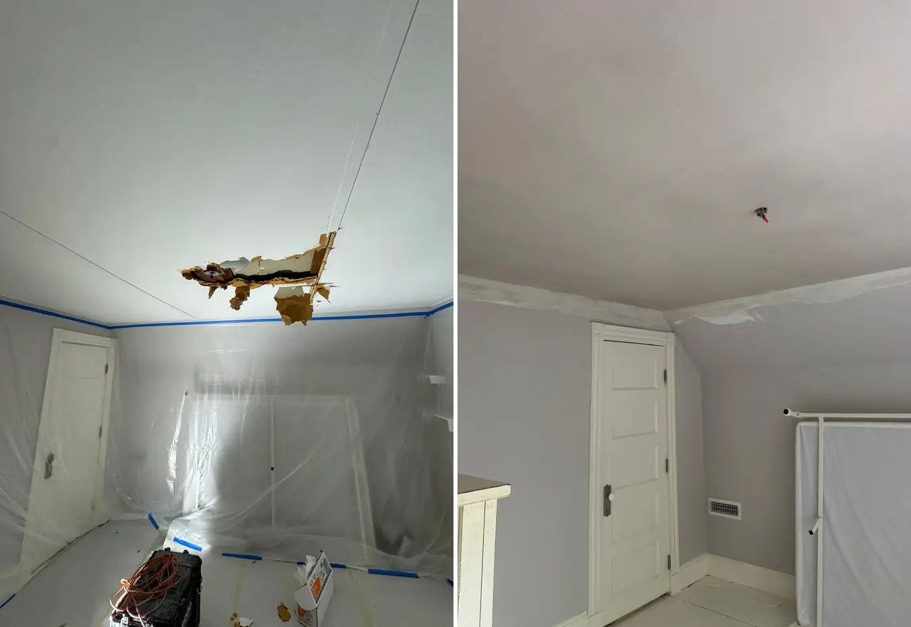
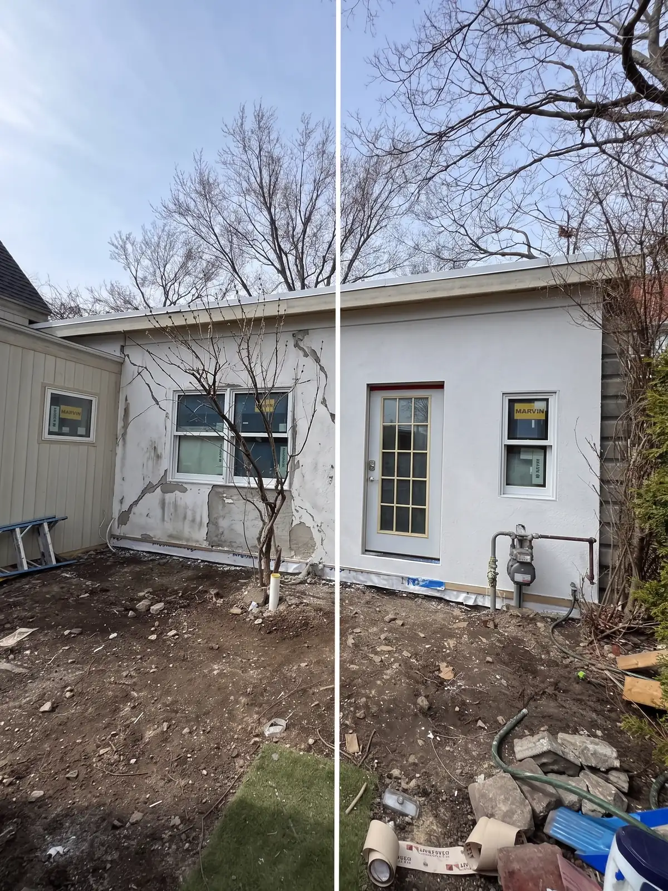
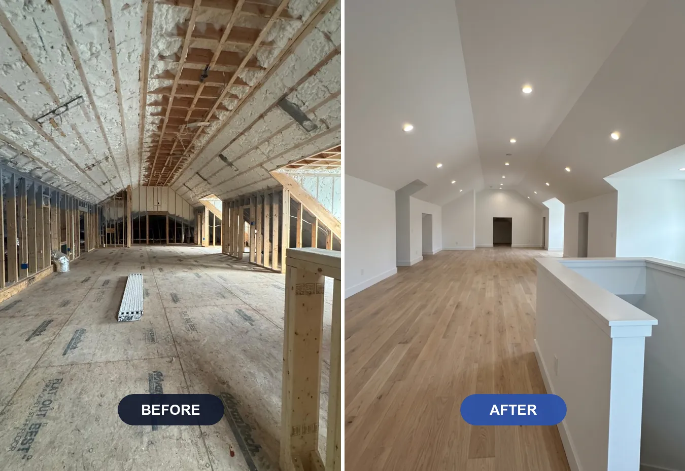

Plastering services in Boston from the owner himself: ceiling and water damage repair, stucco, blueboard and the premium decorative finishes almost no one local offers. Detailed written estimate, home left clean.

Signature FinishMarble-like polished walls, applied by hand one layer at a time by the owner himself.
Learn more
Signature FinishSeamless, waterproof, modern surfaces for bathrooms, showers and floors. The finish designers ask for by name.
Learn more
Signature FinishThe waterproof Moroccan lime finish for showers and wet rooms. A rare craft, applied by the owner.
Learn more
Repair & RestorationCracks, sagging and old lath-and-plaster ceilings restored cleanly, on the day we promise.
Learn more
Fast ResponseWater-stained or damaged ceiling? We respond fast, give you a detailed written estimate, and leave no mess behind.
Learn more
Repair & RestorationCracks, chimneys and exterior walls repaired to last, matching the original texture cleanly.
Learn more
Walls & CeilingsThe New England standard for smooth, hard-wearing walls in renovations, additions and new builds.
Learn moreAlmost every call we get in Boston falls into one of two groups. The first is repair: a cracked or sagging ceiling, a stain after a leak upstairs, stucco that opened up over the winter. The second is a new surface: smooth veneer plaster walls in a renovation, or a decorative finish like Venetian plaster, microcement or tadelakt that turns a room into the best part of the house.
Knowing which group your project is in helps you pick the right page above and helps us give you an accurate estimate faster. If you are not sure, that is normal. Send a photo or book a walkthrough and the owner will tell you what is actually going on.
Plaster ceiling repair covers cracks, loose sections and sagging lath and plaster ceilings, the most common problem in the older homes of Boston, Newton and Brookline. Water damaged ceiling repair handles stains, bubbling and soft spots after a leak, once the source is fixed. Stucco repair deals with cracked exterior walls and chimneys, matching the original texture so the repair disappears.
Venetian plaster is a polished, marble-like finish built up by hand in thin layers. Microcement gives bathrooms, showers and floors one seamless, waterproof surface with no grout lines. Tadelakt is the traditional Moroccan lime finish for showers and wet rooms. Few plasterers in Greater Boston apply all three, and the owner does this work himself.
Blueboard and veneer plaster is the New England standard for new walls and ceilings in additions, renovations and new builds: harder and more durable than taped drywall, with a smooth finish that is ready for paint.
1. Tell us about it. Call (617) 461-7575 or use the free estimate form. A couple of photos of the wall or ceiling help a lot.
2. Walkthrough. The owner visits, checks the surface and what is behind it, and talks through the options with you, including the simplest fix when that is enough.
3. Written estimate. You get the scope, the materials and the timeline in writing.
4. The work. We protect the room, do the job and keep you updated. Most repairs take one to three days; decorative finishes take longer because each coat needs time to cure.
5. Final walkthrough. We review the finish with you and leave the space clean.
We are based in Malden and work across Greater Boston, with dedicated pages for Boston, Newton, Brookline, Chestnut Hill, North Reading and Melrose. Not on the list? Call anyway: we regularly take projects in nearby towns.
A large share of the houses around Boston were built before drywall existed, with lath and plaster walls and ceilings. That plaster is harder, quieter and longer lasting than most modern walls when it is cared for. The right repair keeps it working for decades; the wrong one, like covering it with drywall or a thick coat of joint compound, hides the problem until it comes back. Our job is to match the repair and the finish to the house you actually have.
Three things drive the price of a plaster job in Boston: the size of the area, the condition of what is behind the surface, and the finish. A hairline crack in sound plaster is a small repair; a ceiling where the plaster has let go of the lath needs to be secured or rebuilt first. Decorative finishes cost more than a smooth wall because they are built up by hand in several coats. Access matters too: high ceilings, stairwells and occupied rooms take more setup. All of it is spelled out in the detailed written estimate, so there are no surprises once the work starts.
Seven services: Venetian plaster, microcement, tadelakt, plaster ceiling repair, water damaged ceiling repair, stucco repair, and blueboard and veneer plaster. We work in Boston and across Greater Boston, including Newton, Brookline, Chestnut Hill, North Reading and Melrose.
Tell us what you see: a crack, a stain, a sagging ceiling, or a finish you want. The owner looks at the wall or ceiling in person and recommends the right fix. Many calls that start as a repair turn out to be a simple patch, and we will tell you when that is the case.
Yes. Every job starts with a detailed written estimate that lists the scope, the materials and the finish, so you know exactly what is included before any work begins.
In most Greater Boston homes, yes. Original plaster that is still bonded to the lath can be secured, patched and skimmed, which keeps the character and the sound insulation of an older house. We only recommend tearing out when the plaster has failed and cannot be saved.
Yes. We work directly for homeowners and also as the plaster finish on projects run by general contractors, architects and interior designers, and we coordinate our schedule with the rest of the trades.
Tell us about your project. We put the scope and value in writing before any price, and the owner answers directly.
Four quick steps. The owner replies within one business day.
Prefer to talk? Call (617) 461-7575
One tap. Your call goes straight to the owner.
Or call now: (617) 461-7575